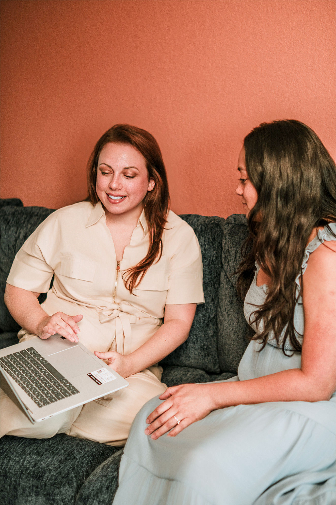

Transforming maternal care through compassionate evidence.
I bridge the gap between complex health data and the human stories of mothers and infants. My mission is to ensure every piece of research translates into a tangible, dignified impact on family well-being.

My Story
My journey began in the quiet observation of neonatal wards and the bustling hallways of community health clinics. I saw firsthand that while the data showed trends, the system often lost the person behind the percentage.
Over fifteen years, I transitioned from a practitioner to a researcher, driven by one question: How can we make evidence serve the most vulnerable? Today, Evidence to Impact is the culmination of that pursuit—a consultancy dedicated to humanizing healthcare through rigorous analysis.

My Philosophy
Radical Empathy
We don't just look at metrics; we look at lives. Every recommendation I make is vetted through the lens of maternal dignity and infant safety.
Editorial Rigor
Accuracy is our greatest tool for advocacy. We treat data like a precious archive.
Trauma-Informed
Consulting with an awareness of the systemic challenges faced by birthing people of color.

Integrative Impact
Success isn't a report on a shelf; it's a policy changed, a life saved, and a community empowered.
My Qualifications
PhD in Maternal Health Policy
University of Public Health Research
Board Certified Health Consultant
National Institute for Health Impact
Lead Investigator: The Dignity Framework
Published in Global Maternal Review
Ready to make a measurable difference?
Let's discuss how we can partner to bring dignity and data-driven results to your next project.